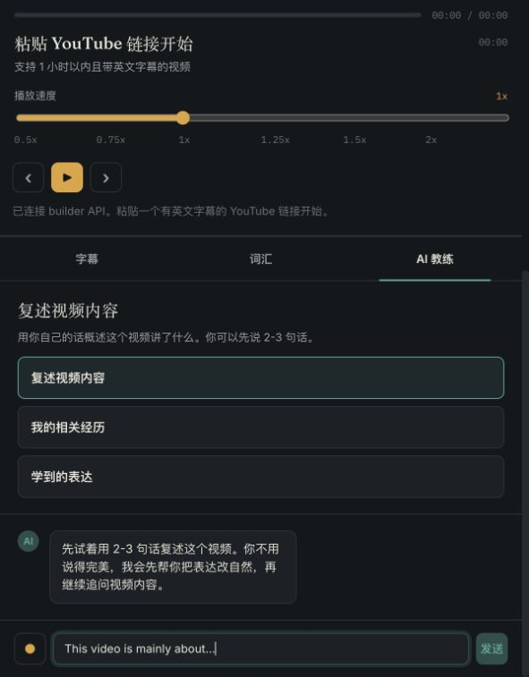
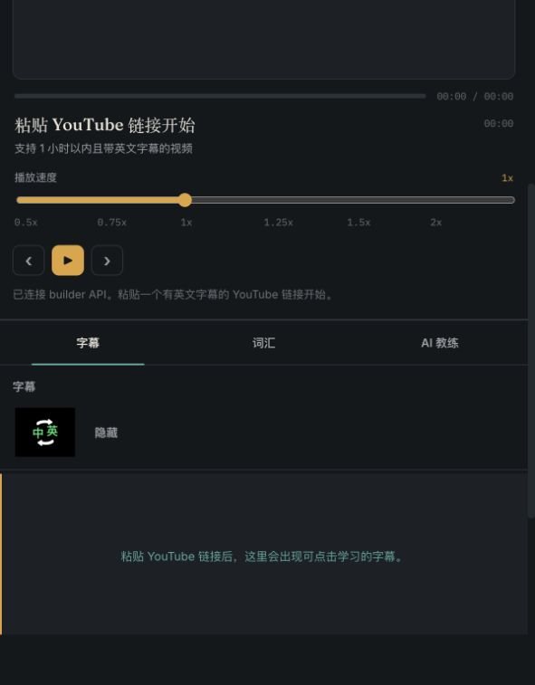
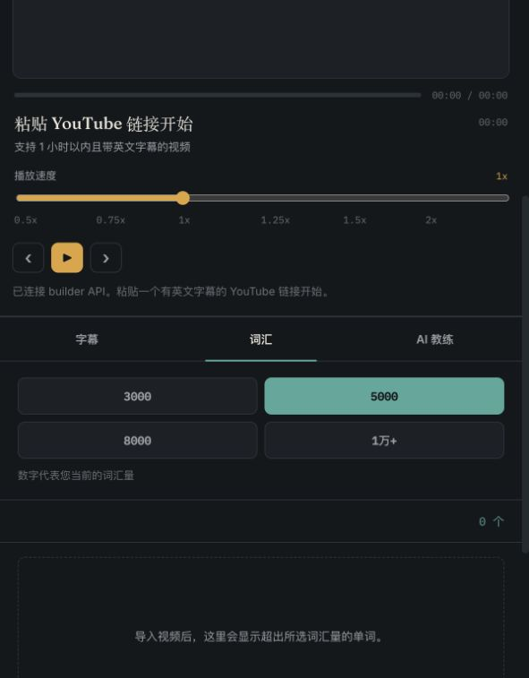

不是再做一个字幕工具
最初的痛点来自看英文文章和视频时的理解障碍，但划词翻译已经有成熟工具。 于是方向被重新收窄：真正缺的是围绕好视频进行深度吸收的学习空间。
Tubeloop 的开发过程不是一开始就有完整答案，而是不断围绕真实使用场景做取舍： 哪些功能真的解决学习问题，哪些只是看起来很酷，哪些技术方案足够轻、足够快、足够适合小规模使用。



这个项目最重要的变化，是从“做一个功能”转向“完成一次学习闭环”。
最初的痛点来自看英文文章和视频时的理解障碍，但划词翻译已经有成熟工具。 于是方向被重新收窄：真正缺的是围绕好视频进行深度吸收的学习空间。
只看懂字幕不等于学会。Tubeloop 把精听、泛听、AI 讨论和表达保存放在同一个视频上下文里， 让学习从“看过”变成“说得出、用得上”。
最终定位不是课程平台，也不是单词软件，而是一个可以不断导入真实 YouTube 视频、 沉淀表达和话题的个人学习系统。
我们没有一次性规划一个庞大系统，而是从“最小学习闭环”出发，一边试用一边修正。
MVP 被定义为：粘贴 YouTube 链接，获得字幕，完成泛听、精听、AI 讨论和表达保存。 这让功能选择有了边界。
前端先做出学习界面，再引入 FastAPI 后端、本地数据库和 AI Builder，让导入、翻译、对话和表达库逐渐从 mock 走向真实可用。
字幕是产品的学习主界面。我们调整了英文、中文、双语、隐藏、断句、时间轴、选中翻译和加入表达库等细节。
AI 教练不再只是“你想聊什么”，而是围绕视频提供三个入口：复述视频、讲相关经历、聊学到的表达。
新增 3000、5000、8000、10000+ 词汇量筛选思路，并用本地词库和词形还原来判断字幕里的生词。
页面采用深色学习界面，核心信息集中在播放器、字幕时间轴、AI 教练和词汇辅助上。
这类 AI 学习产品的难点，不只是调用模型，而是把真实内容、学习动作和反馈状态串起来。
原型阶段容易让界面“看起来能用”，但真实链接涉及视频解析、字幕源、播放器加载和异常反馈。
如果每条字幕都实时翻译，等待时间会很长，也容易触发超时。
YouTube 字幕常按时间戳切片，学习时会出现一句话被拆成很多小段的问题。
直接给用户一个聊天框，用户很可能不知道该说什么，也不知道如何围绕视频练习。
这次最大的经验是：不要先想象用户需要什么，而是回到一个真实学习者的具体场景里， 从真实痛点里长出最小功能。
先观察真实学习过程里卡住的地方，而不是先列功能清单。
比如看字幕麻烦、不能学自己感兴趣的视频、学完没有沉淀。
先保留导入视频、字幕理解、AI 讨论和表达保存，不急着做完整平台。
自己或朋友拿真实视频学习，才能发现哪些地方真的别扭。
根据真实使用反馈反复调整字幕、AI 教练、表达库和页面细节。
Tubeloop 的核心不是“帮用户看懂视频”，而是让一个好视频变成一轮完整的英语学习。
下一个阶段，重点会从“继续加功能”转向“让真实用户每天可以稳定使用”。接下来会围绕稳定性和学习体验继续打磨。
继续优化 YouTube 导入、字幕获取、失败提示和后台日志。
继续优化中英文切换、字幕断句、翻译速度和选中操作。
完善语音输入、表达纠正、追问逻辑和视频上下文理解。